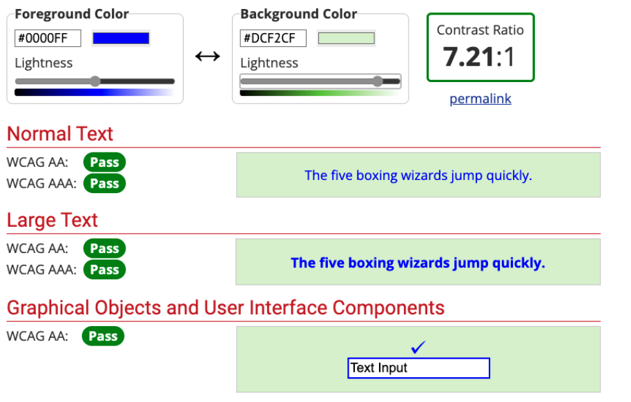

Modul 7
Kap 7.2 - Färg, kontrast och navigering
Text, länkar och menyer behöver vara lätta att hitta, läsa och använda.
Mål
- Förstå varför kontrast påverkar läsbarhet.
- Undvika att färg är den enda informationsbäraren.
- Skapa tydliga länkar, fokuslägen och navigation.
Kontrast och färg
Text måste ha tillräcklig kontrast mot bakgrunden. Ljusgrå text på vit bakgrund eller mörkblå text på svart bakgrund kan bli svår att läsa, även om designen ser lugn ut.
Färgblindhet
Färgblindhet betyder att en person har svårt att skilja vissa färger från varandra. En vanlig form är röd-grön färgblindhet. Därför ska du vara extra försiktig med att använda rött och grönt tillsammans, särskilt om färgerna ska visa viktig information.
Färg får aldrig vara den enda ledtråden. Om ett formulärfält är fel räcker det inte att bara göra texten röd. Skriv också ett tydligt felmeddelande och markera fältet med till exempel text, ikon eller kantlinje.
text: #F00, bakgrund: #0F0
text: #0F0, bakgrund: #F00
text: #F00, bakgrund: #00F
text: #00F, bakgrund: #F00
text: #0F0, bakgrund: #00F
text: #00F, bakgrund: #0F0
Färgkombinationer kan störa läsningen
Vissa starka färger kan också kännas obehagliga tillsammans även för personer som inte är färgblinda. En del upplever att texten nästan vibrerar eller får ett slags djupkänsla. På engelska kallas fenomenet chromostereopsis. Det kan hända när starka färger med olika våglängder, till exempel rött och blått, placeras tätt tillsammans.
Därför räcker det inte att färgerna bara ser tydliga ut var för sig. De måste också fungera tillsammans när texten faktiskt ska läsas.
Exemplen ovan använder bara #F00, #0F0 och #00F. Det är medvetet extrema färger, men de visar varför man inte ska välja färgkombinationer bara för att de ser starka ut.
Problemet med mättad röd
Färgen #FF0000 är helt mättad röd. Den ser stark ut, men den är svår att använda som textfärg. Det kan vara mycket svårt, ibland praktiskt taget omöjligt, att hitta en bakgrundsfärg som både känns rimlig visuellt och klarar alla kontrastkrav för vanlig text, stor text och gränssnittskomponenter.
Det beror på att kontrast inte bara handlar om att två färger är olika. Kontrast handlar om ljushet. En stark röd färg kan fortfarande ha för låg ljushetskontrast mot många bakgrunder.
Prova själv: röd text i Contrast Checker
- Gå till WebAIM Contrast Checker.
- Sätt Foreground Color till
#FF0000. - Ändra Background Color och försök hitta en färg som uppfyller alla kontrasttesterna.
- Jämför resultatet för normal text, stor text och gränssnittskomponenter.
- Fundera på om färgkombinationen också känns bra att läsa, inte bara om den får godkänt i verktyget.

Färg räcker inte ensam
Om ett fel bara visas med röd färg kan vissa användare missa betydelsen. Kombinera färg med text, ikon, kantlinje eller tydligt meddelande.
Navigation och fokus
Länkar ska ha tydliga namn som säger vart de leder. Den som navigerar med tangentbord behöver också se var fokus ligger. Ta därför inte bort fokusmarkering utan att ersätta den med en tydlig egen stil.